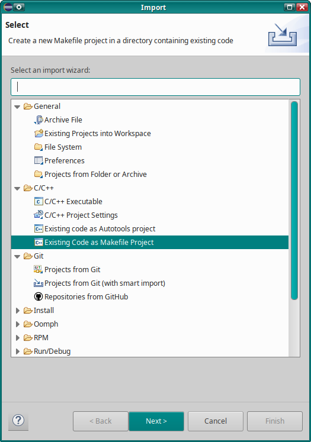
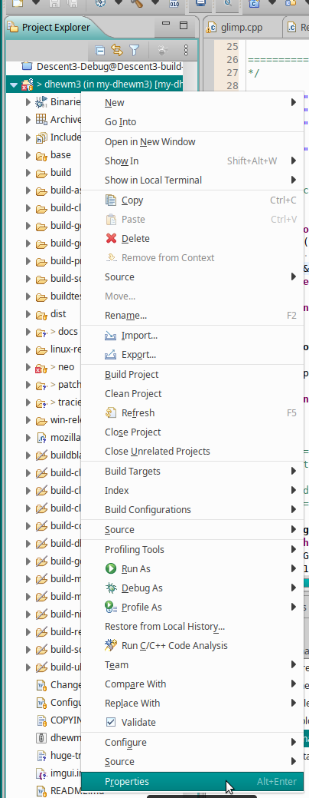
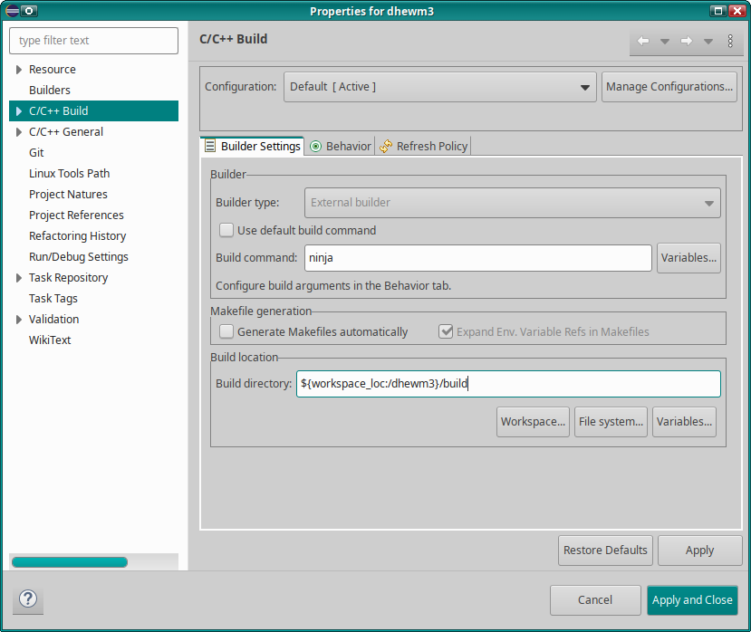
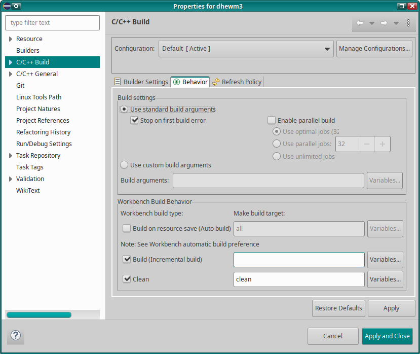
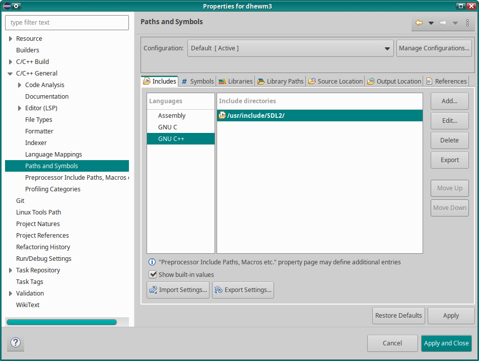
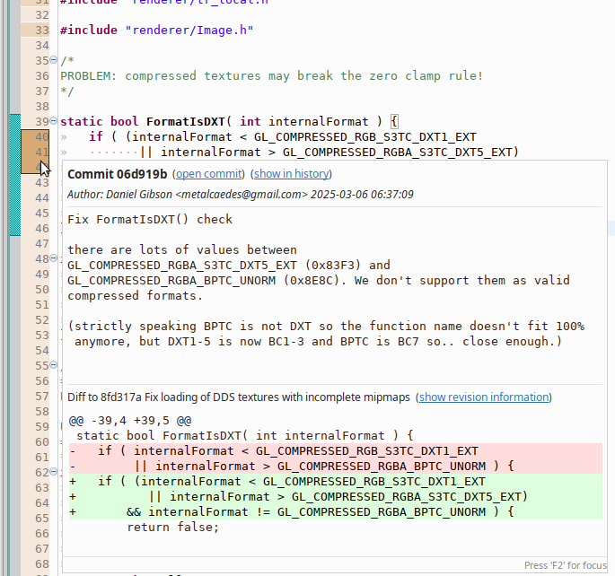

I’ve been using the Eclipse IDE with its “CDT” C++ plugin (the Eclipse IDE for C/C++ Developers package) since forever, basically.
It’s generally great, but setting up a project can be a bit of a PITA if you haven’t read this
article, as it’s not exactly intuitive if you want it to actually work.
“Actually work” as in: Eclipses source parser/indexer actually finds all included headers and thus
“knows” about the functions and types they define, so IDE features like code navigation and
autocompletion can function.
First, forget about CMake’s ability to generate Eclipse projects, those are in a very outdated format and while Eclipse does open them, they don’t work particularly well.
Second, forget about Eclipses integrated CMake “support”. At least in the current version (“2024-12 R”) it’s even worse than the projects generated by CMake: For some reason it can’t find any system includes (and doesn’t let you set include paths either), so your code will just be a red soup of Eclipse errors complaining about unknown types..
So what should I do?
Import your Code
The trick is to click File → Import... and then select Existing Code as Makefile Project.

Click Next, give it a Project Name, select your code location (if you use Git,
ideally use the directory .git is in so you can use Eclipse’s Git integration)
and then select Linux GCC as Toolchain (if you’re using Linux, otherwise choose
something that seems appropriate for your platform).
Now Click the Finish button.
Now, once Eclipse is done indexing your source, you should already have something halfway usable.
Setup Build
If you want to compile from Eclipse (and don’t use a Makefile in your project root for building), you have to tell it how to build.
For this right-click on your project in the Project Explorer and select Properties.

In the Properties dialog, select C/C++ Build, it should look kinda like this:

If you don’t build with make (but ninja, for example), uncheck [ ] Use default build command
and enter your build command there.
If you don’t build in your project root, select the build directory to use under Build location.
Now switch into the Behavior tab:

If your default build command isn’t make all (or ninja all if you entered “ninja” in the
previous step), change the Build (Incremental build) argument accordingly (for ninja you probably
want to just clear that field).
Also adjust the Build settings as required - if you use make, you probably want to
[x] Enable parallel build (it will append -j 8 or some other number to the build command),
if you use ninja that’s not necessary as it uses all cores by default, if you use something else
you hopefully know what kind of argument it needs - selecting (*) Use custom build arguments and
entering them might come in handy.
If you changed anything, click the Apply button - or Apply and Close if don’t want to change any
other settings.
Adding include paths and build defines
Still in the project Properties, select C/C++ General → Paths and Symbols.
In the Includes tab you can add additional include directories (that are usually passed to the
compiler by your build system; Eclipse doesn’t know that but still needs them so it can find the
headers so autocompletion and code navigation features can work).

As you can see, this is set per language, so if you have C and C++ source files, make sure it’s
added to both - thankfully the Add dialog has a checkmark for Add to all languages.
Another thing Eclipse may need to “understand” your code is build defines that are passed by your
build system to the compiler with -DFOO or -DBAR=42 or similar, and that may be used in the code
for #ifdef FOO or #if BAR == 42, for example.
This can be done in the # Symbols tab, again with settings per programming language.
When you’re done, click Apply and Close.
Afterwards maybe make Eclipse re-index your source (so it can use the new include paths and build defines), by right-clicking your Project again and then selecting Index → Rebuild.
Additional Tips and Tricks
Show Git Revision Information Next To Code
When a source file is opened, you can right-click the line numbers and select Show Revision Information (if you’re using Git and Eclipse detected that).
This is quite useful to see which commit last changed particular lines: Different commits are
shown with different colors and hovering the mouse over such a colored block shows more information.

To disable the revision information again, right-click the line number and select Revisions →
Hide Revision Information.
Hacks in Code to Make Eclipse’s Code Indexer Happy
Sometimes it can happen that Eclipses parser/indexer doesn’t understand something in your code, for example a fancy macro construct.
If that becomes too annoying, you can work around it by writing stub-code for the indexer
#ifdef __CDT_PARSER__ // for Eclipse
// just a stub to shut up warnings based on misunderstood code
#define MY_FANCY_MACRO(X, Y, Z)
#else // for real compilers
#define MY_FANCY_MACRO(X, Y, Z) \
SOME_REAL( X, FANCY(SHIT(Z) ? Y : I_DONT_KNOW) )
#endif
Call Hierarchy
Probably the main reason why I use Eclipse and not some other C++ IDE.
You can right-click functions, global variables or class members and select
Open Call Hierarchy. For functions/methods it will, like other IDEs, show what functions call
that function, and who calls them etc (and unlike in Visual Studio this is really fast!).
For global variables or class members it will show the functions that access these variables -
and from there on again who calls those functions etc.
I’m not aware of any other IDE offering this and can not overstate how useful this feature is for
understanding code!
It often is easier to use this to figure out how some code works and why it behaves weirdly than
endless stepping through a debugger (of course sometimes that’s still necessary).
I really wouldn’t want to miss it ♡
Even though this doesn’t always work 100%, it might get confused by template magic, for example, or (for whatever reason) references code from other projects in your Eclipse Workspace (even though you didn’t link them or anything), for me it totally makes up for the kinda janky setup - though of course I hope that the project creation/import issues gets fixed eventually so one can just import a CMake (or meson or whatever) project and Eclipse sets include paths and defines based on the CMake (or meson or whatever) settings.
Debugging
Eclipse CDTs debugger frontend is pretty neat, try it out!